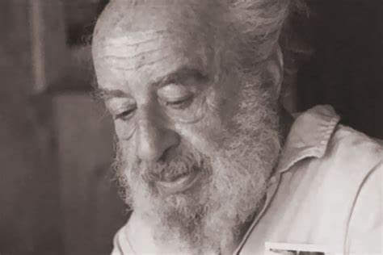

Німецький лікар-психіатр, психотерапевт єврейського походження. Основоположник гештальт-терапії. Спільно з Полом Гудманом і Ральфом Гефферліном написав працю «Гештальт-терапія, збудження і зростання людської особистості» (1951). У 1952 разом з «сімкою» (крім нього, в «Сімці»: Лора Перлз, Ізидор Фромм, Пол Гудман, Еліот Шапіро, Річард Кіцлер і Пол Вейс) заснував Нью-Йоркський Гештальт-інститут.
